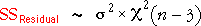
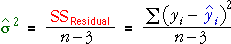
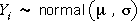
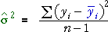
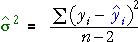
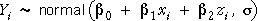
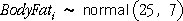

Need to estimate the error standard deviation
We stated on the previous page that the three least squares estimates have normal distributions whose standard deviations depend on the x-values and z-values in the data set and also on the population error standard deviation, σ
The standard deviations of the parameter estimates are particularly important since they describe the accuracy of the estimates.
The green functions depend only on the x- and z-values in the data, so they can be evaluated from a single data set, but the value of σ is unknown in practice. We therefore need an estimate of σ in order to get information about the accuracy of the estimates.
Estimate of the error variance
For notational convenience, we will describe estimation of the error variance, rather than its square root, the error standard deviation.
The sum of squared residuals from the least squares equation form the basis of our estimate of σ2.

The residual sum of squares has a distribution called a chi-squared distribution with (n - 3) degrees of freedom.

Since the mean of a chi-squared distribution equals its degrees of freedom, our best estimate of σ2 is the mean residual sum of squares,

Simulation
The diagram below again generates random responses from the model

Click Take sample several times to build up the sampling distribution of the residual sum of squares and the best estimate of σ2, the mean residual sum of squares.
Increase the sample size, n, with the pop-up menu.
Reason for dividing by (n - 3)
You may be wondering why different divisors have been used when estimating σ2 for the models that we have encountered so far. In particular,
| Model | Estimate of variance |
|---|---|
|  |  |
|  | |
|  |
As extra parameters are added to the model, it is expected that the least squares residuals will become smaller. After all, the parameter estimates are chosen specifically to make the residual sum of squares as small as possible, so adding parameters to the model should allow us to reduce the residual sum of squares.
The greater the number of parameters in a model, the smaller the denominator for the best estimate of the error variance.
(You may spot the pattern here and may be able to make a good guess at the denominator to use for models with other numbers of explanatory variables!)
Simulation
To illustrate the need for a lower divisor when more explanatory variables are used, we again investigate models for percentage body fat. However we will now use two explanatory variables that are unrelated to body fat.
We therefore simulate the body fat of the 25 men using the simple model,

A scatterplot of percentage body fat against birthday for a sample of men is shown below.
Each additional explanatory variable in the model allows the residual sum of squares to be reduced, even though the explanatory variables are totally unrelated to the response.
Click Another data set and verify that this happens whatever the data set.